这篇文章按五段主线来读：先抓残差直觉和 HC 失稳，再进入 Birkhoff/Sinkhorn 机制，然后看论文证据，最后落到 TileKernels 的工程成本。
正文不急着进公式，先把三条读者必须带着走的直觉放在一起：残差连接为什么稳定、HC 为什么想把残差流加宽、mHC 为什么必须给流间 mixing 加上 Birkhoff 约束。后文只沿着五段主线展开：问题和失败模式 → 核心机制 → 论文证据 → 工程落地 → 适用边界。
残差连接（He et al. 2016）的核心信念是：叠层之后，至少不会比不叠更差 。把它写成式子就是 $x_{l+1}=x_l+F(x_l)$，恒等映射 $I$ 始终在反向传播路径上，梯度 $\partial L/\partial x_l$ 至少有一份不衰减的"高速公路"。
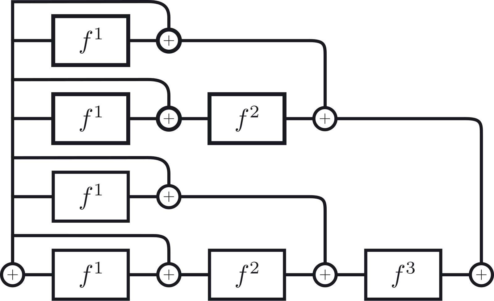
这条 identity 通道的数学保障是：单位矩阵在矩阵乘法下幂等，$I^L = I$，连乘不爆不衰。把它写成多层展开：
从第 $l$ 层走到第 $L$ 层只是"加上沿途所有 sublayer 输出的和"。这是线性叠加 ，没有任何乘积链条，所以也就没有谱范数 / 梯度的指数行为。
但单条残差流终究是个"窄通道"——所有信息必须挤过同一个 $C$ 维 vector。Hyper-Connections (HC, Zhu et al. 2024) 提议把残差加宽为 $n$ 条并行流（论文常用 $n=4$），用三组学习矩阵在流之间做混合：
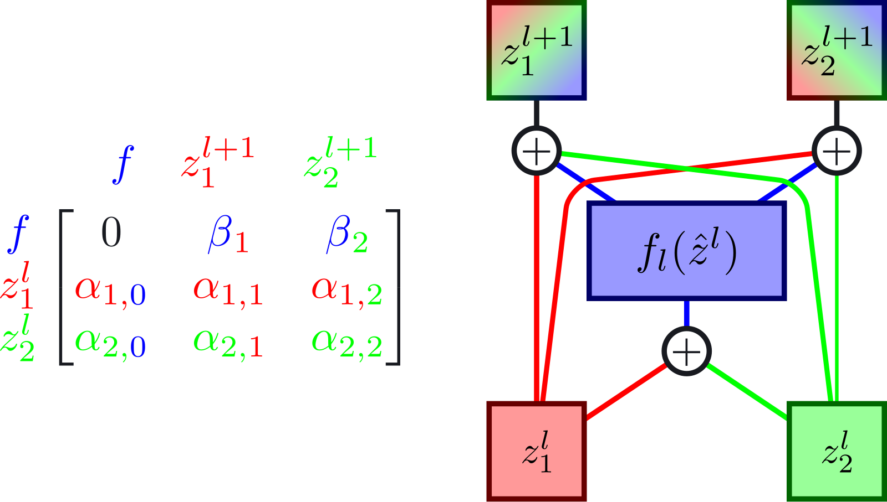

HC 之所以诞生，不是因为 pre-norm 会让浅层信息消失；恰好相反，pre-norm 的优点就是保住一条很干净的 identity 通道。真正的瓶颈在于：DeepSeek-V3/V4 这类现代 transformer 基本都把所有层的信息写进同一条残差流，稳定是稳定了，但拓扑表达力和残差带宽都被压在一条通道里。Verhoeven 的两张图分别解释了"稳定从哪里来"和"瓶颈在哪里"。
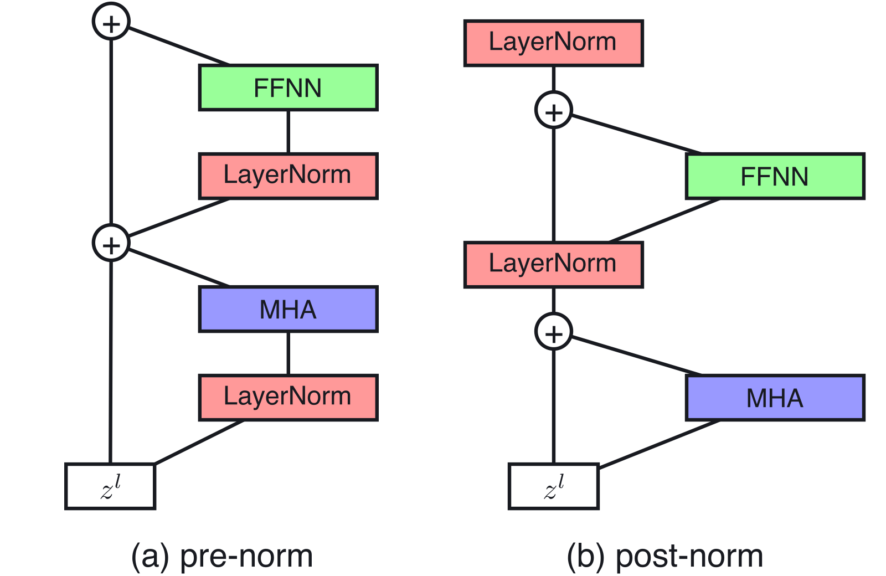
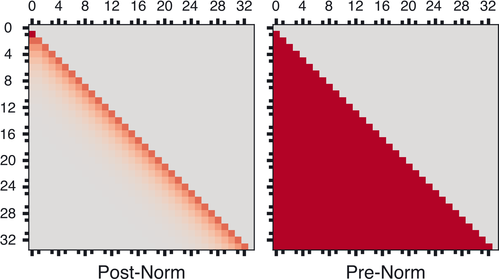
HC 学到的连接性模式也很有意思：
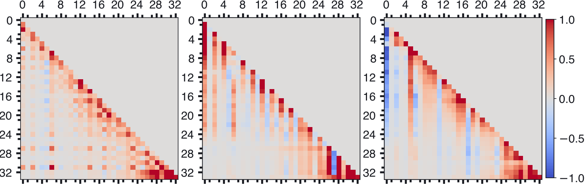
这里不能直接跳到定义。前面已经看到，HC 里真正危险的是 $H^{res}_l$：它每一层都会在 $n$ 条残差流之间做一次 mixing，单层看起来可能只是轻微重组，但深层模型里会变成 $\prod_l H^{res}_l$ 的连乘。如果这个 mixing 空间允许任意缩放或偏置，标准残差里的 identity 项就不再是 $I^L=I$，而是一串可能爆炸、塌缩或把某条流复制到所有流上的矩阵。
所以 mHC 需要的不是“越自由越好”的矩阵，而是一种安全 mixing 空间 ：它要允许不同残差流交换信息；要包含 identity / permutation 这种无损重排；要保证单层不放大范数；还要在多层相乘后仍留在同一空间里。Birkhoff polytope 刚好满足这个约束清单 ，所以它不是突兀的数学装饰，而是把 HC 的多流表达力重新套回 ResNet identity contract 的工具。
对一个 $n\times n$ 矩阵 $M$，若 $M_{ij}\geq 0$ 且每行每列之和都恰好为 1，称它为双随机矩阵（doubly stochastic matrix）。所有双随机矩阵构成的集合是一个 $(n-1)^2$ 维的凸多胞体，记作 $\mathcal{B}_n$（Birkhoff polytope）。Birkhoff-von Neumann 定理 给出它的顶点恰好是 $n!$ 个置换矩阵——也就是说，每个双随机矩阵都是置换矩阵的凸组合：
$$ M\in\mathcal{B}_n \;\Longleftrightarrow\; M=\sum_{\sigma\in S_n} \lambda_\sigma P_\sigma, \quad \lambda_\sigma\geq 0,\;\sum_\sigma \lambda_\sigma =1 $$直观地说，$M$ 是一个软置换 ：每条输出流从输入流分配权重，但权重总量守恒；每条输入流也不会被无限复制。相比无约束 $H^{res}$，它允许“重组”，但不允许“凭空放大”。本文核心要用的三条性质是：
把 $H^{res}_l$ 约束在 $\mathcal{B}_n$ 上意味着：每一层仍然可以学习如何在 $n$ 条通路之间重新分配信息，但这种重新分配像“软排列”而不是任意线性变换；无论 transformer 多深，复合残差混合矩阵 $\prod_l H^{res}_l$ 都仍是双随机矩阵，identity-mapping 这条"高速公路"在数学上守住了。
| 符号 | 含义 | 典型值 / 维度 |
|---|---|---|
| $n$（或 mhc_mult） | 残差流宽度 / expansion rate | 4（所有论文实验） |
| $C$（或 $d_{model}$） | hidden dim | 1280 (3B) / 1920 (9B) / 2560 (27B) / 7168 (V4-Pro) |
| $L$ | transformer 总层数 | 12 / 18 / 30 / 60+ |
| $x_l$ | 第 $l$ 层多流残差状态 | $\mathbb{R}^{n\times C}$ |
| $H^{pre}_l,H^{post}_l$ | 残差流 → sublayer 入 / 出 → 残差流 | $\mathbb{R}^{1\times n}$（per token 动态） |
| $H^{res}_l$ | 残差流间混合矩阵（mHC 双随机） | $\mathbb{R}^{n\times n}$ |
| $F$ | sublayer：attention 或 FFN/MoE | — |
| $\alpha,\beta$ | 动态参数化的缩放、偏置 | $\alpha$ init = 0.01（论文 Table 5） |
| $\varphi$ | per-token 的 $C\to n+n+n^2$ 投影矩阵 | $\mathbb{R}^{C\times (2n+n^2)}$（n=4 时 = $C\times 24$） |
| $t_{max}$ | Sinkhorn-Knopp 迭代轮数 | 20（论文/所有实现） |
| $\mathcal{B}_n$ | Birkhoff polytope（双随机矩阵集合） | $(n-1)^2$ 维 |
| $L_r$ | multilayer recompute 块大小 | $L_r^*\approx\sqrt{nL/(n+2)}$ |
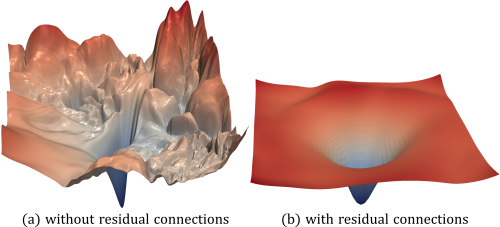
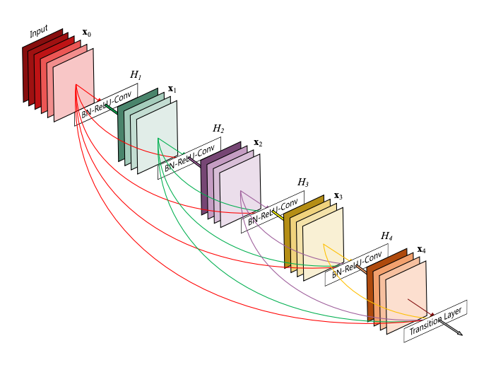
HC 把递推从 $x\to x+F$ 改写为三组矩阵 + 一份 sublayer 。论文 Eq. 3：
维度：$x_l\in\mathbb{R}^{n\times C}$，$H^{res}_l\in\mathbb{R}^{n\times n}$（流间混合），$H^{pre}_l,H^{post}_l\in\mathbb{R}^{1\times n}$（流→单一输入、单一输出→流）。当 $n=1, H^{res}=1, H^{pre}=H^{post}=1$ 时退化为标准残差。
多层展开是判断这套递推稳不稳定的关键：
对比 Eq. 2，可以看到：HC 把"线性叠加"换成了"矩阵连乘 + 线性叠加" 。残差的稳定性取决于 $\prod H^{res}$ 的谱性质——而 HC 对 $H^{res}$ 没有任何约束。
HC 实际的 $H^{res}_l$ 由动态参数化 得到（per token 计算）：
这里的 $\widetilde{H}^{res}_l$ 是刚生成出来的 raw mixing 矩阵 ，$H^{res}_l := \widetilde{H}^{res}_l$ 的意思是：HC 原版没有后处理，不做 Sinkhorn、不强制非负、不强制行/列和为 1，也不保证 $\|H^{res}_l\|_2\le 1$。换句话说，"无约束"不是说没有参数化，而是说 raw matrix 直接进入残差连乘链。
$\bar x_l=\mathrm{RMSNorm}(x_l)$。tanh ∈ (-1,1) 是元素级的 ——它只能限制单个 entry，不能限制整个矩阵的谱范数；再乘上可学的 $\alpha^{res}_l$（标量）和加上 $b^{res}_l$ 后，$\prod_l H^{res}_l$ 完全可能放大。论文 Appendix A.1 给出 $\alpha$ 初始化是 0.01 ，意味着初期 HC 接近标准残差，但训练后期 $\alpha$ 学大就可能爆。
mHC 的所有思路在 P1 中一目了然——保留 HC 的 $n$ 流结构、保留三组矩阵的形式，只把 $H^{res}_l$ 改成"投影到 Birkhoff polytope 上" 。具体的"投影"操作是 Sinkhorn-Knopp，我们留到结构设计部分详细展开。先看一句论文摘要里的关键定位：
"To address these challenges, we propose Manifold-Constrained Hyper-Connections (mHC), a general framework that projects the residual connection space of HC onto a specific manifold to restore the identity mapping property , while incorporating rigorous infrastructure optimization to ensure efficiency." arxiv 2512.24880v2 · Abstract
整个故事可以这样总结：
| 设计 | 残差形式 | identity 性质 | 表达力 | 额外代价 |
|---|---|---|---|---|
| Residual (2016) | $x+F$ | ✅ $I^L=I$ | 窄（单流） | — |
| HC (2024) | $H^{res}x+(H^{post})^\top F(H^{pre}x)$ | ❌ $\prod H^{res}\to\infty$ | 宽（n 流） | (5n+1)C I/O |
| mHC (2026) | 同上，但 $H^{res}\in\mathcal{B}_n$ | ✅ $\prod H^{res}\in\mathcal{B}_n$ | 宽（n 流） | (5n+1)C + Sinkhorn → +6.7% wall-clock |
这部分承接第 1 章的动机，把论文 Section 3 的 loss surge、gradient norm 和 Amax gain 串成一条因果链。
论文用 27B 配置（30 层 / hidden 2560 / n=4）做了"HC vs mHC"的训练对照，结果非常戏剧：
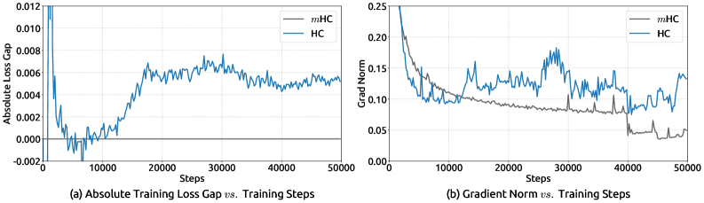
论文用一个非常工程化的指标——Amax Gain Magnitude ——来诊断 HC 的稳定性。定义是"最大绝对行和（forward）和列和（backward），在一条 sample sequence 上对所有 token 取平均"。直觉是：
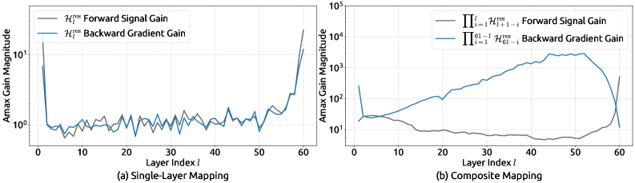
Verhoeven 在博客里把这张图重画并叠上 forward/backward 信号 magnitude 的逐层曲线：
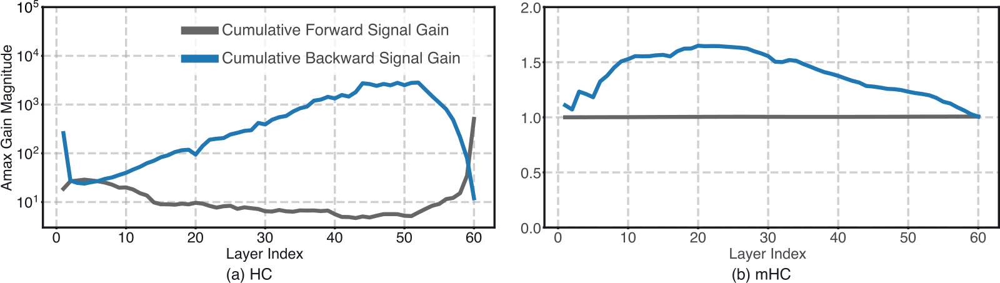
Verhoeven 抓到的另一个重要现象：
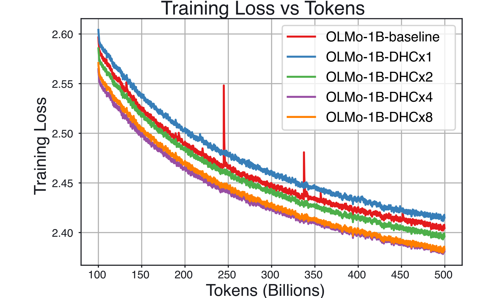
HC 的失败提醒我们：任何 element-wise multiplicative gating 套在残差通道上，只要 gating 没有强制为 1 邻域，连乘后就会指数偏离 。这不仅适用于 HC，也适用于 Highway networks、某些 LayerScale 实现、以及部分 deepnorm/postnorm 变体。一个一致的工程教训是：残差通道上的可学习参数，要么用"加性 small init"（如 LayerScale γ_init=1e-4），要么用"乘性 unitary"（如 mHC 的 Sinkhorn projection / Newton-Schulz）；中间的"乘性自由 scalar/matrix"通常都不安全 。
论文主图把残差、HC、mHC 三种残差范式并排放在一起，结构对比一目了然。本节先把它放大、拆解 ，让读者先建立整体结构感，再进入后面的机制解释。
在继续讲标准残差、HC 风险和 Birkhoff 约束之前，先用 tokenbender/mHC 的 hyper_connections_mhc.py 把 mHC forward 从代码视角预览一遍。这份实现更像一个算法契约版 ：它把 mHC 包成 PyTorch module，可以包住任意 attention / FFN / MoE branch。读它最重要的是看清 forward → width_connection → branch/closure → depth_connection 这条链；第 4 章再回到 DeepSeek TileKernels 的 fused-kernel 落地。
H_res_logits / H_pre_logits / H_post_logits 是每层可学习参数，H_res 通过 sinkhorn_log 投到 Birkhoff polytope；它不是 DeepSeek TileKernels 中的 token-conditioned φ → σ/Sinkhorn 融合实现。因此这张图用来理解 forward contract ，不是用来估算 V4-Pro 训练 kernel 性能。
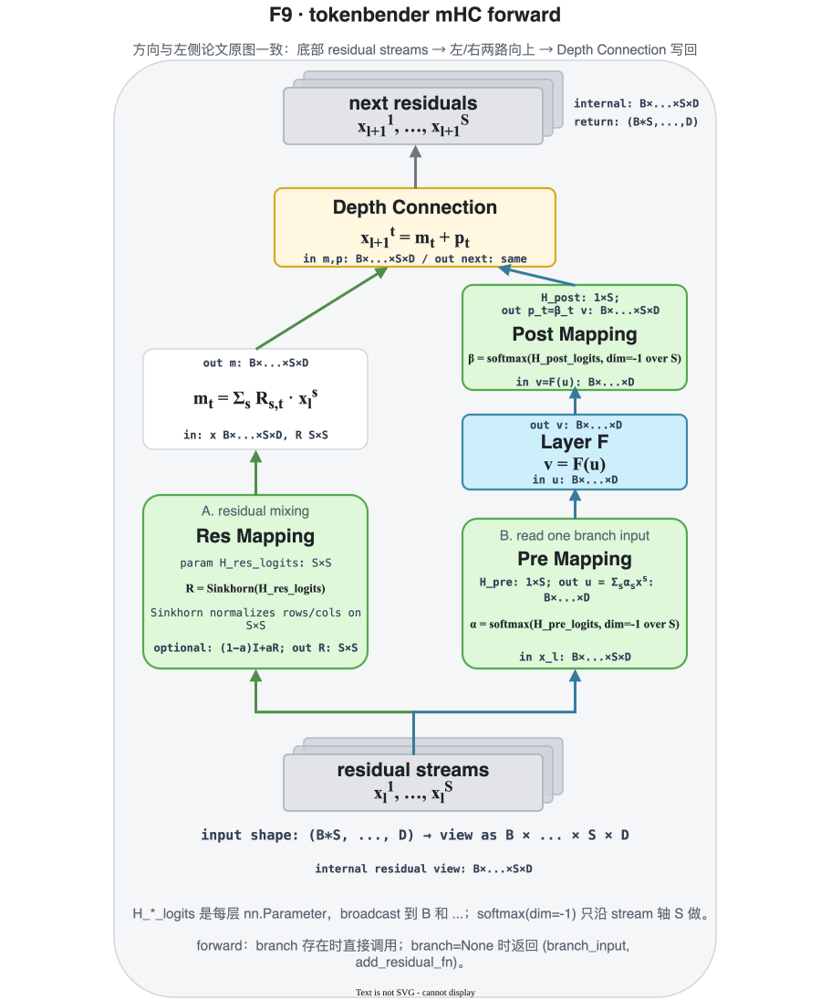
B 真实 batch size。S residual stream 数量，也就是论文里的 $n$ 条残差流。D hidden / feature dimension。... 被包住的 Layer F 自己保留的业务维；文本里通常是 token 维 T，图像里可以是 H×W。(B*S, ..., D)B×...×S×DRes MappingPre → F → Post三组 H_* 都来自 tokenbender 每一层自己的 nn.Parameter logits：H_pre_logits 和 H_post_logits 都是 1×S，H_res_logits 是 S×S。这里的 softmax(dim=-1) 明确沿最后一维做，也就是沿 residual stream 轴 S 做；它不沿 batch、token、hidden 做，得到的权重会 broadcast 到 B×... 上。
| 图中符号 / 计算框 | shape | 含义 |
|---|---|---|
residuals | (B*S, ..., D) | 输入时把每条 residual stream 当成一条扩展 batch。 |
| $x_l$ / view 后 residual streams | B×...×S×D | 还原出真实 batch 和 S 条残差流。 |
H_res_logits | S×S | 可学习的 stream-to-stream mixing logits；代码里对角线初始为 0，其余位置初始为 -8，先接近 identity。 |
R = Sinkhorn(H_res_logits) | S×S | 双随机 mixing 矩阵；Sinkhorn 在这个 S×S 小矩阵上反复做行/列归一化，使行、列和都约等于 1。 |
optional identity mix | S×S | 若开启 identity mix，则 $R\leftarrow(1-\alpha)I+\alpha R$，让残差流保留一部分原始直通。 |
| $m_t=\sum_s R_{s,t}\,x_l^s$ | B×...×S×D | 左路 residual mixing：把旧的 S 条流混成新的 S 条 residual 底座。 |
H_pre_logits / $\alpha$ | 1×S | alpha = softmax(H_pre_logits, dim=-1) 沿 stream 轴归一化，从 S 条流里读出一个 branch 输入。 |
| $u=\sum_s \alpha_s x_l^s$ | B×...×D | 右路 Pre Mapping 输出，送入普通 Layer F。 |
Layer F | B×...×D → B×...×D | 被包住的 attention / FFN / MoE，输入输出保持标准单流 shape。 |
H_post_logits / $\beta$ | 1×S | beta = softmax(H_post_logits, dim=-1) 沿同一个 stream 轴归一化，把 branch 输出写回 S 条流。 |
| $p_t=\beta_t F(u)$ | B×...×S×D | 右路 Post Mapping 输出：把单流 branch 输出分发回 S 条流。 |
Depth Connection | B×...×S×D | 逐目标流相加：$x_{l+1}^t=m_t+p_t$，代码里默认对应 depth_residual_fn(add) + dropout。 |
next residuals / return | B×...×S×D → (B*S, ..., D) | 输出下一层的 S 条 residual stream，然后重新折回 tokenbender 外部约定。 |
落到最常见的 transformer，就是：(B*S, T, D) 输入 → view 成 (B, T, S, D)；R 是 (S,S)，alpha/beta 是 (1,S)；Pre Mapping 与 Layer F 走 (B,T,D) 单流；Res Mapping 与 Post Mapping 回到 (B,T,S,D)；最后 reshape 回 (B*S,T,D)。
width_connection ：先做 residual_transform、split_fracs、rearrange("(b s) ... d -> b ... s d")。mHC 在这份实现里强制 num_fracs=1、num_input_views=1，所以图里只保留一条 branch input view。H_res ：H_res_logits 经 sinkhorn_log 变成双随机矩阵；若开启 mhc_residual_identity_mix，再和单位阵做 (1-alpha)I + alpha S 混合。随后 einsum("s t, ... s d -> ... t d") 把旧 S 条 residual 重新混合成 S 条 residual 底座。H_pre/H_post ：两者的原始量都是 nn.Parameter logits，shape 是 (1,S)。代码里的 softmax(dim=-1) 就是沿最后的 stream 维 S 做归一化；H_pre 把 S 条 residual 压成 branch 输入，H_post 作为 beta 存进 closure，等 branch 算完后再把单流输出广播回 S 条流。forward ：如果 module 初始化时传了 branch，就直接执行 branch 并回写；如果没传，就返回 (branch_input, add_residual_fn)，外部可以手动调用 branch，再把结果喂给 closure。这个 closure 模式正是 drop-in wrapper 最灵活的地方。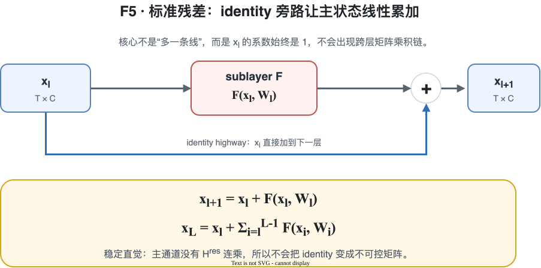
从 Eq.1 出发递归代入：
$$ x_{l+1} = x_l + F(x_l, W_l) $$ $$ x_{l+2} = x_{l+1} + F(x_{l+1}, W_{l+1}) = x_l + F(x_l, W_l) + F(x_{l+1}, W_{l+1}) $$ $$ \vdots $$ $$ x_L = x_l + \sum_{i=l}^{L-1} F(x_i, W_i) \quad\text{(Eq.2)} $$关键观察：$x_l$ 系数永远是 1（不是任何矩阵乘积链），所以梯度 $\partial x_L/\partial x_l = I + \text{Jacobian terms}$ 的 identity 分量始终保留——这是 ResNet 论文 (He et al. 2016) "identity mapping is preserved" 的本意。
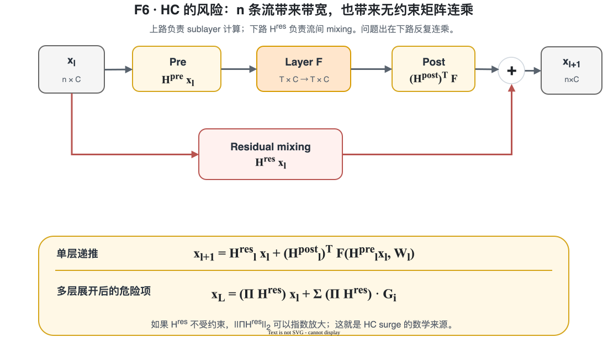
把 Eq.3 沿层数递归代入。令 $G_i := (H^{post}_i)^\top F(H^{pre}_i x_i, W_i)$ 表示第 $i$ 层 sublayer 的输出：
$$ x_{l+1} = H^{res}_l x_l + G_l $$ $$ x_{l+2} = H^{res}_{l+1} x_{l+1} + G_{l+1} = H^{res}_{l+1}(H^{res}_l x_l + G_l) + G_{l+1} = H^{res}_{l+1}H^{res}_l x_l + H^{res}_{l+1}G_l + G_{l+1} $$继续到第 $L$ 层：
$$ x_L = \underbrace{\Big(\prod_{i=1}^{L-l} H^{res}_{L-i}\Big)}_{\text{identity 通道的"系数矩阵"}} x_l + \sum_{i=l}^{L-1} \Big(\prod_{j=1}^{L-1-i} H^{res}_{L-j}\Big)\cdot G_i \quad\text{(Eq.4)} $$对比 Eq.2 ：标准残差里 $x_l$ 系数是 $I$，这里是 $\prod H^{res}_l$。没有任何机制保证它的谱范数 ≤ 1 ——这正是 mHC 要修的核心问题。
论文 Section 4.1 在 Eq. 6 给出双随机矩阵集合的形式定义：
三个条件：行和=1，列和=1，元素非负。论文紧接着列出三条性质（informal Lemma）：
性质 1：Norm Preservation 保的是 residual-mixing 链不主动放大。 证明上可以借用性质 3：任意双随机矩阵都能写成置换矩阵的凸组合 $$ H^{res}=\sum_{\sigma\in S_n}\lambda_\sigma P_\sigma,\quad \lambda_\sigma\ge 0,\quad \sum_\sigma\lambda_\sigma=1. $$ 每个置换矩阵 $P_\sigma$ 只是重排 $n$ 条流，$\|P_\sigma\|_2=1$；谱范数又是凸函数，所以 $$ \|H^{res}\|_2 \le \sum_\sigma \lambda_\sigma\|P_\sigma\|_2 = 1. $$ 因此任意向量经过 $H^{res}$ 都不会在 L2 意义下被放大：$\|H^{res}v\|_2\le \|v\|_2$。反向传播里乘的是 $(H^{res})^\top$，谱范数相同，所以这条残差 mixing 路径 本身不会把梯度放大。注意：这不是说整个 Transformer 的梯度绝对不爆，sublayer $F$ 的 Jacobian 仍然另算；它保证的是 Eq.4 里 $\prod H^{res}$ 这条 identity-like 通道不再成为爆炸源。
性质 2：Compositional Closure 保的是“多层之后约束还在”。 若 $A,B\in\mathcal{B}_n$，则 $$ (AB)\mathbf{1}=A(B\mathbf{1})=A\mathbf{1}=\mathbf{1},\qquad \mathbf{1}^\top(AB)=(\mathbf{1}^\top A)B=\mathbf{1}^\top B=\mathbf{1}^\top, $$ 且 $A,B\ge 0$ 推出 $AB\ge 0$，所以 $AB\in\mathcal{B}_n$。递推到很多层，$\prod_l H^{res}_l$ 仍是双随机矩阵，再结合性质 1 得到 $\|\prod_l H^{res}_l\|_2\le 1$。这就是“identity 通道闭合”的含义：从浅层到深层的系数不再跑出受控集合，仍然是一个守恒的 soft-mixing，而不是任意线性变换。
性质 3：Geometric Interpretation 给的是可解释的参数空间。 Birkhoff-von Neumann 定理说双随机矩阵的顶点正好是 $n!$ 个置换矩阵。置换矩阵代表“把残差流重新编号”，不会缩放、不复制、不吞掉流；凸组合代表在这些重排之间做 soft 选择。因此 $H^{res}$ 不是被限制成一个固定 identity，而是在“所有软置换”的多面体里学习：允许跨流交换信息，但行和=1 防止某个输出流凭空放大，列和=1 防止某个输入流被无限复制。这正是 mHC 想要的折中：保留 HC 的多流表达力，同时恢复标准残差的守恒直觉。
有了 manifold 定义，剩下的工程问题是如何把 raw 的 $\widetilde{H}$ 投到 $\mathcal{M}^{res}$ 上 。论文 Eq. 7-8 给出完整方案：
其中 $\bar{x}_l=\mathrm{RMSNorm}(x_l)$ 是已归一化的多流残差，$\varphi^*_l\in\mathbb{R}^{C\times n}$ / $\mathbb{R}^{C\times n^2}$ 是轻量 Linear，$\alpha^*_l\in\mathbb{R}$ 是可学缩放（论文 init=0.01），$b^*_l$ 是可学偏置。三组合在一起就是 $\varphi_l\in\mathbb{R}^{C\times (2n+n^2)}$ 的一个 大 Linear（n=4 时 = $C\times 24$）：控制输入 $\bar{x}^{ctrl}_l$ 按 token 看是 $(T,C)$，投影输出 $z_l$ 是 $(T,2n+n^2)$，再切成 $(T,n)$、$(T,n)$、$(T,n^2)$ 三段。
三个不同的"激活函数"各有讲究。这里的 $\sigma(\cdot)$ 不是 $\delta$（delta），也不是统计里的标准差符号，而是 sigmoid / logistic 函数 ：
$$ \sigma(z)=\frac{1}{1+\exp(-z)},\qquad \sigma(z)\in(0,1). $$所以 $2\sigma(\cdot)$ 就是把 sigmoid 的输出范围从 $(0,1)$ 放大到 $(0,2)$。
其中 $T_r(M)_{ij} = M_{ij}/\sum_k M_{ik}$（行归一），$T_c(M)_{ij} = M_{ij}/\sum_k M_{kj}$（列归一）。论文和所有公开实现都默认 $t_{max}=20$；对正非奇异输入，收敛速度几何级 ，n=4 时 20 轮后 row/col sum 与 1 的偏差通常在 $10^{-7}$ 以下。
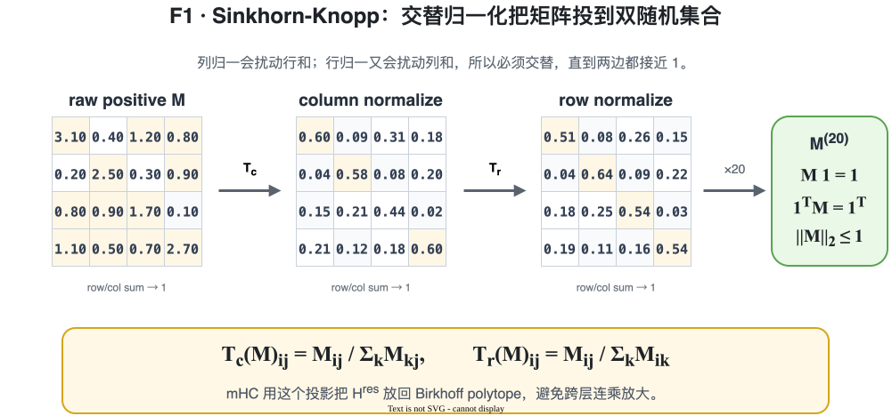
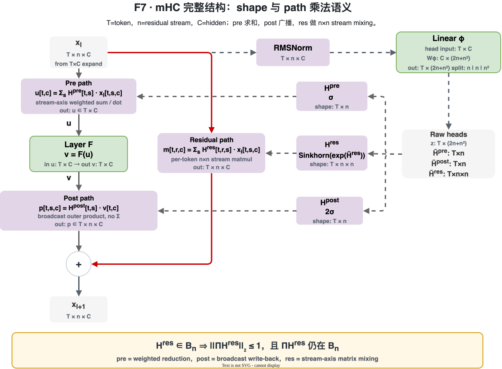
这里的“乘法”不是同一种乘法。 从 kernel 角度看都包含逐元素 multiply；区别在于 pre/res 后面会沿 stream 轴做 reduction，而 post 不 reduction，只把单流 sublayer 输出广播写回 $n$ 条残差流。
| 符号 | per-token shape | 带 token 维 shape | 乘法语义 |
|---|---|---|---|
| $x_l$ | $(n,C)$ | $(T,n,C)$ | 入口处普通 hidden 是 $(T,C)$；mHC 先通过 expand / broadcast 得到 $n$ 条 residual stream，形成 $x_0\in\mathbb{R}^{T\times n\times C}$。之后每一层传播的都是这个多流状态 $x_l$，不是每层再从 $(T,C)$ 重新生成。 |
| Linear $\varphi_l$ | $C\to(2n+n^2)$ | $\bar{x}^{ctrl}_l:(T,C)\to z_l:(T,2n+n^2)$ | $z_l[t,k]=\sum_c \bar{x}^{ctrl}_l[t,c]\varphi_l[c,k]$。这是普通 feature-axis linear projection；随后按 $n|n|n^2$ split 成 $\widetilde H^{pre}$、$\widetilde H^{post}$、$\widetilde H^{res}$，最后一段 reshape 为 $(T,n,n)$。 |
| $H^{pre}$ | $(1,n)$ | $(T,n)$ | $u[t,c]=\sum_s H^{pre}[t,s]x_l[t,s,c]$。这是沿 stream 轴 $s$ 的加权求和 / inner product，输出 $(T,C)$。 |
| $u_l=H^{pre}_l x_l$ | $(1,C)$ | $(T,C)$ | 这就是 Layer F 的输入。 $u_l$ 是 data activation；上面的 Linear $\varphi_l$ 只是生成 $H^{pre}$ / $H^{post}$ / $H^{res}$ 这些控制权重，不是 $u_l$ 本身。Layer F 做 $v_l=F(u_l)$，shape 仍是 $(T,C)$。 |
| $H^{post}$ | $(n,1)$ | $(T,n)$ | $p[t,s,c]=H^{post}[t,s]v[t,c]$。这是 broadcast scalar-vector product，也可看成 $(n,1)\otimes(1,C)$ 的 outer product；没有 $\sum_s$，输出 $(T,n,C)$。 |
| $H^{res}$ | $(n,n)$ | $(T,n,n)$ | $m[t,r,c]=\sum_s H^{res}[t,r,s]x_l[t,s,c]$。这是每个 token 上的 $n\times n$ 矩阵乘，沿 source stream $s$ 求和，输出 $(T,n,C)$。 |
实现口径补充： F7 按论文公式展示 head-generation contract；DeepSeek TileKernels 的 norm_fn 会从 (T,n,C) 多流残差读数据，做分块投影与 RMS 聚合，传给 pre_big_fuse 的中间量是 (n_splits,T,2n+n²)，聚合后仍回到上表的 z_l:(T,2n+n²)。
把 Eq.4 里的 $H^{res}_l$ 约束在 $\mathcal{M}^{res}=\mathcal{B}_n$ 上后，连乘项满足：
$$ \big\|\prod_{i=1}^{L-l} H^{res}_{L-i}\big\|_2 \leq \prod_{i=1}^{L-l} \|H^{res}_{L-i}\|_2 \leq \prod_{i=1}^{L-l} 1 = 1 $$第一步是矩阵谱范数的次乘性，第二步用 Eq.6 的 Norm Preservation 。同时 Eq.6 的 Composition Closure 给：
$$ \prod_{i=1}^{L-l} H^{res}_{L-i} \in \mathcal{B}_n \quad\text{(乘积仍是双随机)} $$合在一起：任意深度的复合 $H^{res}$ 仍然是谱范数 1 的双随机矩阵 ——这正是 P5 看到的"mHC 复合 Amax 稳定在 1.6"（不是 1.0 是因为 20 轮 Sinkhorn 仅近似投影）。
Sinkhorn 在 PyTorch / TileLang 里允许 autograd 反向自动展开 20 步迭代，但每一步的 forward 中间态都要保存 ——对 mHC 来说是 30 层 × 20 轮 = 600 个 $n\times n$ 矩阵每 token，显存爆。论文官方实现 tile_kernels/mhc/sinkhorn_kernel.py 选择"backward 时全部 recompute"：
# tile_kernels/mhc/sinkhorn_kernel.py 反向策略（伪代码）
@tilelang.jit(pass_configs={...})
def _mhc_sinkhorn_bwd(hidden_size, token_block_size, repeat, eps):
# Inputs: grad_output, x (原始 H̃) — 都是 (T, n, n) fp32
# Output: grad_input (T, n, n) fp32
# Step 1: forward 重算 — exp 后 repeat 轮 row/col norm，中间态写 shared mem
# Step 2: 反向遍历 — 对每个 row/col norm 反向；row-max subtraction 的稳定路径需要 chain rule 配合
pass这种做法显存友好但计算多 ：bwd 比 fwd 多花 ~2× 时间（一次 fwd 重算 + 一次反向）。论文 Section 4.3.1 提到："Backward pass consolidated to reduce redundant reloading"——通过把所有中间态在 register/shared mem 上保留、整轮在一个 kernel 里跑完，避免反复读写 HBM。
_ref_sinkhorn_fwd 缺 row-max subtraction ——纯 PyTorch fallback 在 bf16 下 exp 会 overflow（输入大时变 inf，后续除法 → NaN）。fused kernel 走的是 fp32 + log-space，不受影响。理论上可以——Sinkhorn-Knopp 是固定点迭代 ，固定点 $M^*$ 满足 $M^* = T_r(T_c(M^*))$。隐函数定理告诉我们 $\partial M^*/\partial \widetilde{H}$ 可以通过解一次线性系统得到，不必沿迭代图反向。OT 文献（Cuturi 2013, Adams & Zemel 2011, Bayer et al. 2020）已有 closed-form Jacobian-vector product。但这条路径对 transformer 训练来说有三个工程顾虑 ：(1) Sinkhorn 在 20 轮就近似收敛，"近似的不动点" 上做 implicit diff 误差 vs 显式微分需要量化；(2) 解线性系统每 token 要算一个 $n^2\times n^2$ 的 Jacobian，n=4 时是 $16\times 16$ 矩阵——register fit 但 numerical 风险更大；(3) 反向稳定性需要单独验证，DeepSeek 的工程选择是"先 explicit、后续优化"。这是后文潜在优化部分的 ⑦ 项。
| 子图 | 核心元件 | 核心公式 | 稳定性 | 缺点 / 收益 |
|---|---|---|---|---|
| P1(a) Residual | identity 旁路 + sublayer + sum | Eq.1 / Eq.2 | ✅ 线性叠加，无矩阵乘积链 | 窄通道（单流 C） |
| P1(b) HC | n 流 + H^pre/H^post/H^res（无约束） | Eq.3 / Eq.4 / Eq.5 | ❌ ∏H^res 谱范数无界 | 带宽 n×，但 27B 训练 12k step loss surge |
| P1(c) mHC | 同 HC + Sinkhorn 投影 H^res ∈ B_n | Eq.6 / Eq.7 / Eq.8 / Eq.9 | ✅ ‖∏H^res‖₂ = 1（接近） | 带宽 n×，复合 Amax 1.6，6.7% 训练开销 |
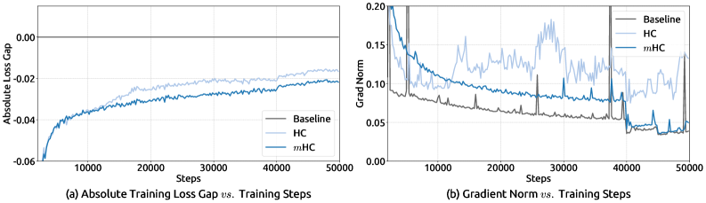
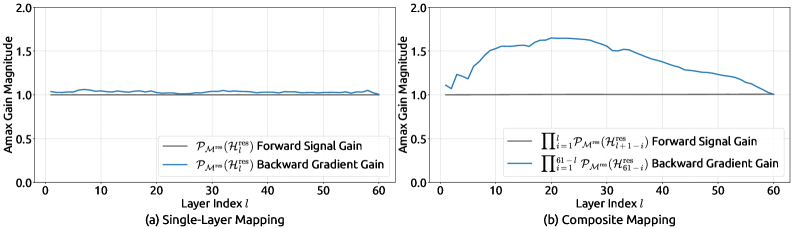
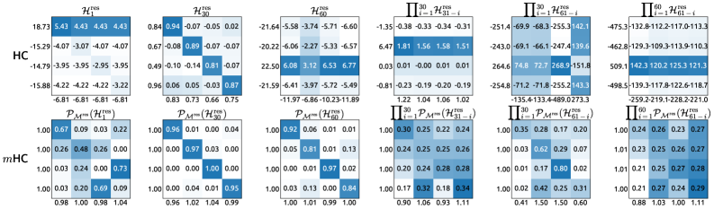
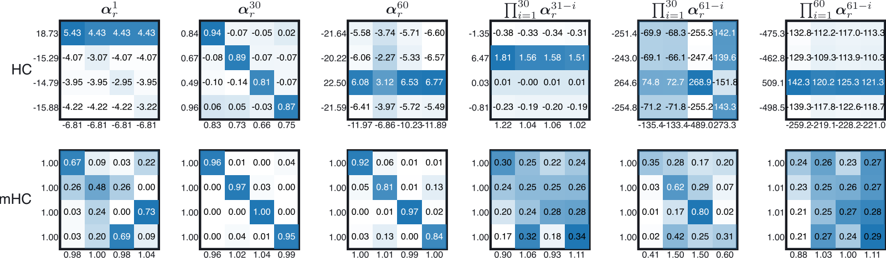
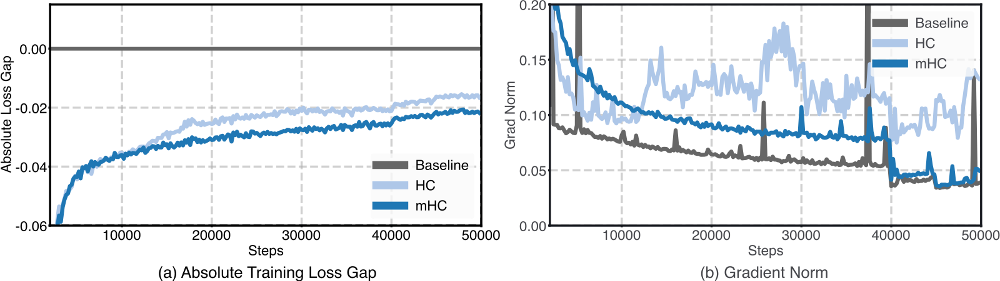
论文 Table 1 做了"关掉某个矩阵换成固定值"的消融，看每个组件的贡献：
| $H^{res}_l$ | $H^{pre}_l$ | $H^{post}_l$ | Loss gap vs baseline |
|---|---|---|---|
| 固定 identity | 固定 uniform 1/n | 固定 uniform ones | —（baseline） |
| 固定 identity | ✓ 学 | 固定 uniform ones | −0.022 |
| 固定 identity | ✓ 学 | ✓ 学 | −0.025 |
| ✓ 学（mHC） | ✓ 学 | ✓ 学 | −0.027 |
读法：
27B 模型的下游 benchmark 全量结果（论文 Table 4）：
| Benchmark | Metric | Baseline | HC | mHC | mHC − HC | mHC − Baseline |
|---|---|---|---|---|---|---|
| BBH | EM | 43.8 | 48.9 | 51.0 | +2.1 | +7.2 |
| DROP | F1 | 47.0 | 51.6 | 53.9 | +2.3 | +6.9 |
| GSM8K | EM | 46.7 | 53.2 | 53.8 | +0.6 | +7.1 |
| HellaSwag | Acc | 73.7 | 74.3 | 74.7 | +0.4 | +1.0 |
| MATH | EM | 22.0 | 26.4 | 26.0 | −0.4 | +4.0 |
| MMLU | Acc | 59.0 | 63.0 | 63.4 | +0.4 | +4.4 |
| PIQA | Acc | 78.5 | 79.9 | 80.5 | +0.6 | +2.0 |
| TriviaQA | EM | 54.3 | 56.3 | 57.6 | +1.3 | +3.3 |
三条规律：
论文 Table 5 的全部超参，从 3B 一路到 27B（含 3B × 1T tokens 的 token-scaling 对照）：
| 超参 | 3B | 9B | 27B | 3B (1T) |
|---|---|---|---|---|
| 层数 $L$ | 12 | 18 | 30 | 12 |
| Hidden dim $C$ | 1280 | 1920 | 2560 | 1280 |
| FFN dim | 896 | 1280 | 1536 | 896 |
| Routed experts | 64 | 64 | 72 | 64 |
| Active experts | 6 | 6 | — | 6 |
| Expansion rate $n$ | 4 | 4 | 4 | 4 |
| Sinkhorn iter $t_{max}$ | 20 | 20 | 20 | 20 |
| Batch size | 320 | 512 | 1280 | 2560 |
| Training tokens | 39.3B | 105B | 262B | 1.05T |
| Base LR | 8.6e-4 | 5.9e-4 | 4.0e-4 | 9.0e-4 |
| Gating init $\alpha$ | 0.01 | 0.01 | 0.01 | 0.01 |
三个关键设计选择：
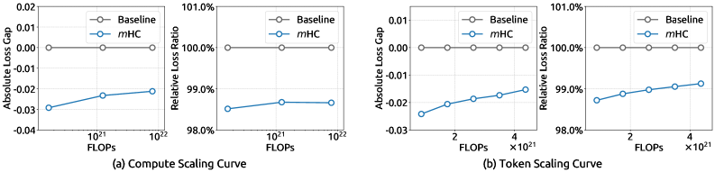
仓库 deepseek-ai/TileKernels（MIT, 2026 公开，1.5k stars）依赖 Python 3.10+ / PyTorch 2.10+ / TileLang 0.1.9+ / CUDA 13.1+ / SM90 或 SM100 GPU。mhc/ 子目录 9 个 kernel 文件：
| 文件 | 主要 kernel | 功能 | 类似论文 Eq. |
|---|---|---|---|
expand_kernel.py | expand_to_mhc_fwd_kernel | 把 (T, C) hidden 广播为 (T, n, C) n 流；blk_n=32, blk_h=128 | 初始化阶段 |
norm_fn_kernel.py | _mhc_pre_norm_fn_fwd_mul / _norm 等 | 融合 RMSNorm + W 投影（tf32 路径）；bf16 输入 → fp32 输出，split-K 累加 | Eq. 14 prep |
pre_big_fuse_kernel.py ⭐ | _mhc_pre_big_fuse | 96 线程/block · 2-stage pipeline · 融合 RMSNorm aggregate + Sinkhorn 20 轮 + σ/2σ mixing + 残差应用 | Eq. 14-15-19 |
pre_apply_mix_kernel.py | _mhc_pre_apply_mix | 把 $H^{pre}_l$ 应用到 (T, n, C) 得到 (T, C) 的 layer_input | Eq. 14 final |
pre_split_mixes_kernel.py | — | 把 24 维 mix 输出切分为 $H^{pre}$/$H^{post}$/$H^{res}$ 三路 | Eq. 8 split |
head_compute_mix_kernel.py | _mhc_head_compute_mix_* | per-token 的 $\sigma(\cdot\,\text{scale}+\text{base})$ head 计算 + 反向 reducer | Eq. 8 σ |
post_kernel.py | _mhc_post_fwd / _bwd | 融合 $x = c\cdot d + \sum a\cdot b$ = $H^{post}\cdot F + H^{res}\cdot x_{res}$ | Eq. 3 right half |
multilayer_recompute_kernel.py | _mhc_multilayer_recompute_kernel | 块化 selective recompute；pointer 数组传 6 类张量 × L 层 | Eq. 20 |
sinkhorn_kernel.py | _mhc_sinkhorn_fwd / _bwd | 独立 Sinkhorn-Knopp fwd/bwd 实现（fp32 · row-max stable · 反向 recompute） | Eq. 9 |
因为“源码文件清单”不等于“稳态 forward 主路径”。 F8 画的是一个 transformer layer 里实际读写大张量的主 runtime 边界：norm_fn 产生 split-K workspace，pre_big_fuse 在一个 TileLang kernel 里吃掉大部分 pre 阶段小步骤，Layer F 是模型自己的 attention / FFN / MoE，post_kernel 融合写回下一层残差。
pre_big_fuse_kernel.py 的确是“少了很多框”的主要原因，但它不是在 Python 层顺序调用那些 kernel，而是把它们代表的概念步骤 内联到一个大 kernel：aggregate split-K partials → scale / RMSNorm 后处理 → 生成并拆分 $H^{pre}/H^{post}/H^{res}$ → 对 $H^{res}$ 做 Sinkhorn → 应用 $H^{pre}$ 得到 layer_input。中间的 H* 小张量尽量留在 register / shared memory，不单独落 HBM。
| 表里的文件 | 为什么 F8 没单独画 |
|---|---|
expand_kernel.py | 只负责进入 mHC 时把 (T,C) 扩成 (T,n,C)，不是每个 layer 内部的稳态主路径。 |
pre_split_mixes_kernel.py / head_compute_mix_kernel.py / pre_apply_mix_kernel.py | 这些名字对应“拆分 H、算 σ/2σ、应用 Hpre”的概念步骤；优化 forward 里被 pre_big_fuse 吸收，不再作为独立大框读写 HBM。 |
sinkhorn_kernel.py | 独立 Sinkhorn fwd/bwd 仍有用，尤其是 backward / fallback / 测试；但 F8 的 forward 主路径里 Sinkhorn 循环在 pre_big_fuse 内部完成。 |
multilayer_recompute_kernel.py | 这是训练 backward 的 selective recompute 策略，不属于一次普通 forward 主图。 |
下面这张图是 mHC 在 一个 transformer layer 内的主 forward 数据流 ，每条连线都标出张量的 (shape, dtype)。这种 DSA / draw.io 风格"shape-annotated 流图"在工程对接时最有用——可以一眼看出哪一段是 split-K workspace、哪一段是 expanded n 流、哪一段是 sublayer 单流，以及精度跳变（bf16 ↔ fp32 ↔ tf32）发生在哪里。
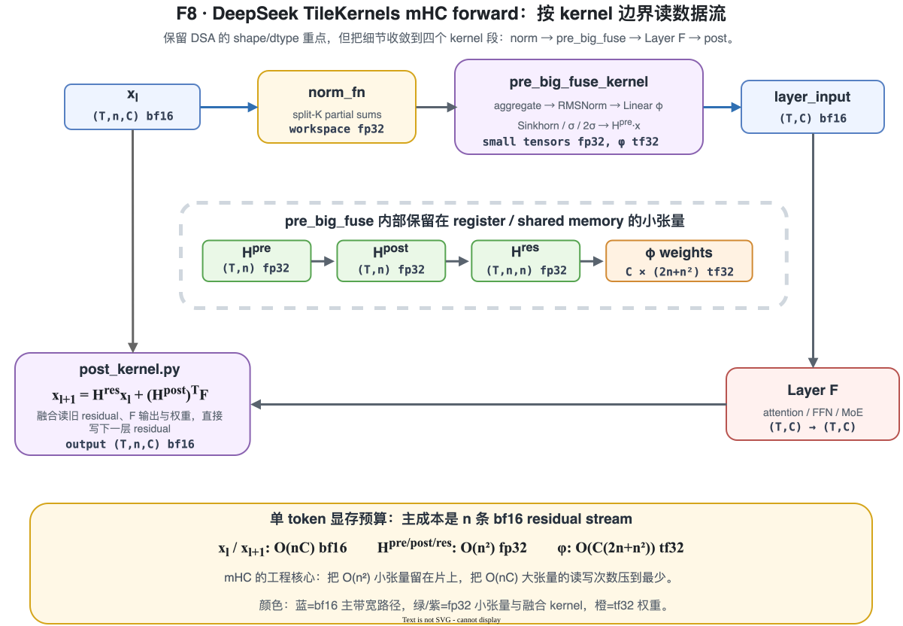
(T,n,C)）与 dtype（bf16 / fp32 / tf32） 。蓝色边 = bf16 主带宽路径；紫色边 = fp32 小张量；橙色 = $\varphi$ 投影的 TF32 Tensor Core 计算路径（TF32 是 matmul compute mode，不是 HBM 里的独立存储 dtype）；紫色虚线 = split-K HBM workspace（norm_fn 写 → pre_big_fuse 读）。读图顺序：① 上方 norm_fn 切 split-K → ② pre_big_fuse 一个 kernel 完成 aggregate / Sinkhorn / σ / mixing 五连击 → ③ sublayer F 在单流上算 → ④ post_kernel 把 H^post·F + H^res·x_l 融合写回 。底部黄板给出单 token 显存预算的精确数字。读这张图时要把 HBM 存储 dtype 和 Tensor Core 计算模式 分开：bf16 / fp32 是张量实际存储与累加精度；TF32 通常表示 FP32 输入在 Tensor Core 上按 TF32 乘法近似执行、FP32 累加。
| 路径 | 主要张量 / 算式 | shape 与 dtype | 为什么这样分 |
|---|---|---|---|
| 蓝色 bf16 主带宽 | $x_l,\ x_{l+1}$ 残差流；$u,\ F(u)$ 是普通 sublayer 的单流输入输出。 | $x_l,x_{l+1}\in\mathbb{R}^{T\times n\times C}$（bf16）；$u,F(u)\in\mathbb{R}^{T\times C}$（bf16）。 | 这里搬的是 hidden activation，成本随 $nC$ 放大。n=4 时，残差流读/写是 baseline 的 4 条流，所以 multilayer recompute 主要压的是 backward 里这些大激活的保存。 |
| 绿/紫 fp32 小张量 | $H_l^{pre},H_l^{post}$ 负责读/写 branch；$H_l^{res}$ 负责 stream-to-stream mixing。 | $H_l^{pre},H_l^{post}\in\mathbb{R}^{T\times n}$；$H_l^{res}\in\mathbb{R}^{T\times n\times n}$；在 fused kernel 内按 fp32 生成、归一化和应用。 | 每个 token 只有 $2n+n^2$ 个控制系数；n=4 时就是 24 个 fp32 值，约 96B/token。它们很小，但 Sinkhorn 行/列归一化、$\sigma$ 与 $2\sigma$ 门控对舍入误差敏感，降到 bf16 容易破坏双随机约束。 |
| 橙色 TF32 计算 | $\varphi_l=[\varphi_l^{pre},\varphi_l^{post},\varphi_l^{res}]$，用于计算 $\bar{x}_l\varphi_l$。 | $\varphi_l\in\mathbb{R}^{C\times(2n+n^2)}$；n=4 时是 $C\times24$。若 $C=7168$，共有 172,032 个权重；TF32 计算读入的是 FP32 权重，按 FP32 存储约 672 KiB。 | $C\times24$ 是很窄的投影，不是主 HBM 瓶颈。用 TF32 Tensor Core 乘法是为了比纯 FP32 路径吞吐更高；精度低于 FP32，但 mantissa 通常高于 bf16，随后生成的 $H$ 仍在 fp32 路径里处理。 |
这是整个 mHC 性能的关键。它把 5 件事塞进一个 96 线程 kernel ，所有中间态留在 register / shared mem 里。完整签名：
# tile_kernels/mhc/pre_big_fuse_kernel.py
@tilelang.jit(
pass_configs={
tilelang.PassConfigKey.TL_DISABLE_WARP_SPECIALIZED: True,
tilelang.PassConfigKey.TL_PTXAS_REGISTER_USAGE_LEVEL: 10,
tilelang.PassConfigKey.TL_DISABLE_VECTORIZE_256: True,
},
)
def _mhc_pre_big_fuse(
hidden_size: int,
rms_eps: float,
mhc_pre_eps: float,
mhc_sinkhorn_eps: float,
mhc_post_mult_value: float, # 默认 2.0 (Eq. 8 中 2σ)
sinkhorn_repeat: int, # 默认 20
n_splits: int = 16, # 与 norm_fn 的 split-K 数对应
mhc_mult: int = 4, # = n
):
# Inputs:
# gemm_out_mul: (n_splits, num_tokens, mhc_mult3) fp32 ← norm_fn 的 split-K 残部
# gemm_out_sqrsum:(n_splits, num_tokens) fp32 ← RMSNorm 平方和
# mhc_scale: (3,) fp32 ← α_pre/α_post/α_res
# mhc_base: (mhc_mult3,) fp32 ← b_pre/b_post/b_res 平铺
# residual: (num_tokens, mhc_mult, hidden_size) bf16 ← 上一层 x_l
# Outputs:
# post_mix: (num_tokens, mhc_mult) fp32 ← H^post (后面给 post_kernel)
# comb_mix: (num_tokens, mhc_mult*mhc_mult) fp32 ← H^res 展平 (后面给 post_kernel)
# layer_input: (num_tokens, hidden_size) bf16 ← H^pre·x_l (给 F = attn/FFN)
# mhc_mult3 = mhc_mult * (2 + mhc_mult)
# = n * (2 + n) = 4 * 6 = 24 (n=4 时)
# = H^pre(n) + H^post(n) + H^res(n²)三个 pass_configs 的含义都不简单：
TL_DISABLE_WARP_SPECIALIZED=True：关掉 Hopper/Blackwell 的 warp specialization。原因：本 kernel 已经在 register pressure 上限附近，再让 producer/consumer warp 各占一份会 spill。这是潜在优化 ⑥ 的来源 。TL_PTXAS_REGISTER_USAGE_LEVEL=10：让 ptxas 把 register 用到最满（level 10 是最大值），允许更高 occupancy 牺牲一些寄存器优化。TL_DISABLE_VECTORIZE_256=True：关 256-bit 向量化。Sinkhorn 内的小矩阵（4×4=16 元素）不适合 256-bit 向量，强行向量化反而触发 padding。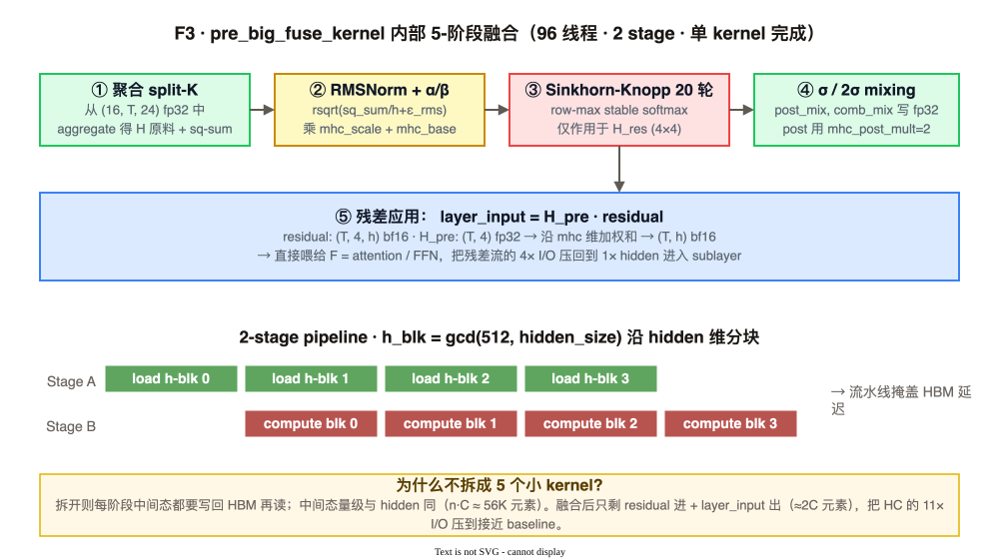
pre_big_fuse_kernel 内部 5 阶段：聚合 split-K → RMSNorm scale → Sinkhorn 20 轮 → σ/2σ mixing → 残差线性组合输出 layer_input。把所有中间态留在 register 与 shared mem 里，避免来回 HBM。sublayer F 之后，需要把 F 的输出 + 旧残差一起更新成新残差。这是带宽密集的操作：read (n,mhc,h) 旧残差 + (n,h) F 输出 + (n,mhc) $H^{post}$ + (n,mhc,mhc) $H^{res}$，write (n,mhc,h) 新残差。源码核心循环：
# tile_kernels/mhc/post_kernel.py 核心算式
# a: (n, mhc, mhc) fp32 ← H^res，已 Sinkhorn 投影
# b: (n, mhc, h) bf16 ← 旧残差 x_res
# c: (n, mhc) fp32 ← H^post
# d: (n, h) bf16 ← F 输出
# x: (n, mhc, h) bf16 ← 新残差（输出）
for h_block in pipelined(ceildiv(h, h_blk), stages=2): # fwd 2-stage / bwd 3-stage
for i_mhc in range(mhc):
acc = c[i_mhc] * d[h_block] # H^post * F (per stream)
for i_mhci in T.serial(mhc): # H^res 4×4 内积 — serial 循环（n=4 不值得开 TC）
acc += a[i_mhci, i_mhc] * b[i_mhci, h_block]
x[i_mhc, h_block] = acc.to(bf16)三个关键设计：
这个 kernel 就是 Megatron-LM 里的 fused_h_post_bda（"bda" 是 bias+dropout+add 的缩写），PR #3828 给出的实测 speedup 3.24×（10.49ms → 3.23ms, s=8192/b=4/n=4/C=7168 on GB200）。
这部分继续留在第 4 章里，把论文已经落地的优化拆成 baseline cost → optimized path → tradeoff。
论文 Table 2 给出"每 token 在残差/HC/mHC 三种方案下的元素读写数"（不含 sublayer $F$ 内部）：
| 方案 | Read elements / token | Write elements / token | n=4, C=2560 实例 |
|---|---|---|---|
| Standard Residual | $2C$ | $C$ | read 5.12K · write 2.56K |
| HC (朴素) | $(5n+1)C + n^2 + 2n$ | $(3n+1)C + n^2 + 2n$ | read 53.78K · write 33.30K · ~11× baseline read |
| mHC (朴素) | HC + 20 轮 Sinkhorn 往返 | HC + 20 轮 Sinkhorn 往返 | 朴素 ~12× baseline |
| mHC (fused) | ~$(n+1)C$ | ~$nC$ | read ~12.8K · write ~10.2K · ~2.5× baseline read |
论文原话："Memory access costs constitute one of primary bottlenecks ... widely referred to as the 'memory wall'." 也就是说，mHC infra 优化的最大着力点不是 FLOPs，是 HBM bandwidth 。下面三条优化都是围绕这个目标。
论文明确点名三个 specialized kernels ：
K1+K2+K3 三者最后再被 pre_big_fuse_kernel 合并成一个超级 fused kernel（见 4.3 的 pre_big_fuse_kernel）。论文还提到一个不那么显眼的 trick：
FusedRmsNormSplitKGemm_N32Stream4 kernel 的核心思路。
这是论文最数学优雅的一段。n×C 的残差流意味着每层激活内存比 baseline 高 n 倍 ；30 层 × 4 流 = 120× baseline 激活 ——直接 OOM。论文 Section 4.3.2 给出"块化 selective recompute"+ 闭式最优块大小 ：
设 $L_r$ 为一个 recompute 块的层数。每块只在块头保存输入 $x_{l_0}\in\mathbb{R}^{n\times C}$（resident memory），块内反向时从 $x_{l_0}$ 重新前向到任意中间层（transient memory）：
$$ \text{Resident}(L_r) = nC \cdot \big\lceil L/L_r\big\rceil $$ $$ \text{Transient}(L_r) = (n+2)C \cdot L_r $$对总内存 = Resident + Transient 求 $L_r$ 的导数令为 0：
$$ \frac{d}{dL_r}\Big(\frac{nCL}{L_r} + (n+2)CL_r\Big) = -\frac{nCL}{L_r^2} + (n+2)C = 0 $$ $$ \boxed{\;L_r^* \approx \sqrt{\frac{nL}{n+2}}\;} $$n=4, L=30 时 $L_r^* \approx \sqrt{120/6} = \sqrt{20} \approx 4.47$，论文取 $L_r=5$。结论：每 5 层做一次 checkpoint，其余反向重算 。总激活内存从 120× 降到约 $4.5\times$ baseline。
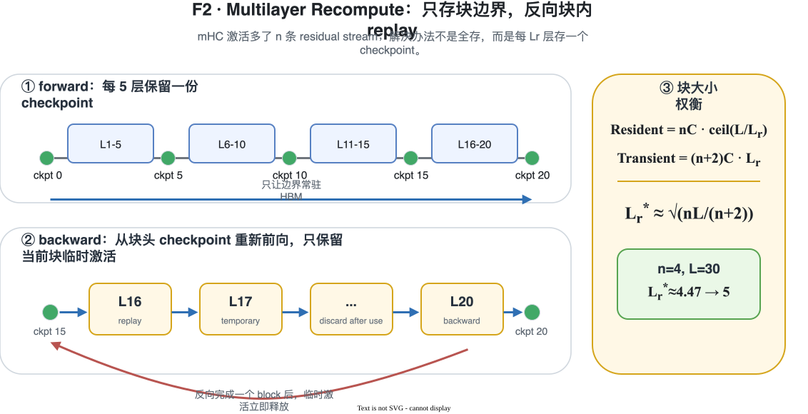
对应实现是 tile_kernels/mhc/multilayer_recompute_kernel.py，签名：
def _mhc_multilayer_recompute_kernel(
mhc_mult: int, # = n
hidden: int, # = C
num_layers: int, # = L_r 一个块大小
num_post: int, # 保留 post 端激活的层数
n_thr: int = 64, h_blk: int = 2048):
def kernel(
initial_residual: T.Tensor[(n, mhc, h), T.bfloat16], # 块头 checkpoint
pre_mix_ptrs: T.Tensor[(L,), T.ptr], # L 层指针数组
layer_output_ptrs:T.Tensor[(L_post,), T.ptr],
post_mix_ptrs: T.Tensor[(L_post,), T.ptr],
comb_mix_ptrs: T.Tensor[(L_post,), T.ptr],
layer_input_ptrs: T.Tensor[(L,), T.ptr],
residual_ptrs: T.Tensor[(L_post,), T.ptr],
) -> None:
# 用 pointer 数组传递 L 个 layer 的 6 类张量 → 灵活配合 DualPipe 错位调度注意 pointer 数组 ：直接传 contiguous 张量也行，但 pointer 让一个 kernel 可以处理"任意 layer 的任意张量"——这对 DualPipe 微 batch 错位、TP/PP rank 错开非常关键。
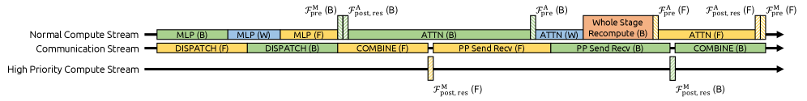
论文 4.3.3 一句话浓缩："$\mathcal{F}_{post,res}$ kernels of MLP ... executed on a dedicated high-priority compute stream"；"attention layers avoid persistent kernels to prevent extended stalls"；"recomputation decoupled from pipeline communication dependencies"。三个 trick 缺一不可 。
论文 Section 4.3 总结句："In-house large-scale training indicates mHC supports training at scale and introduces only 6.7% additional time overhead when expansion rate n=4 ." 把这 6.7% 按来源大致拆开（论文没给细分，下表是基于 PR 公开 benchmark 的合理推断）：
| 开销来源 | 朴素实现 | 优化后 | 归功于 |
|---|---|---|---|
| n×C 残差流的 HBM I/O | ~11× baseline | ~2.5× baseline | ① pre_big_fuse + post_kernel |
| Sinkhorn 20 轮迭代 | 1.36 ms × 30 layer ≈ 41 ms | 0.20 ms × 30 ≈ 6 ms | ① fused_sinkhorn (6.89× speedup, Megatron #3828) |
| $H^{post}$·F + $H^{res}$·x_res | 10.49 ms / layer | 3.23 ms / layer | ① fused_h_post_bda (3.24× speedup) |
| n-stream 激活存储 | n·L·C = 120× baseline | ~4.5× baseline | ② L_r*=5 块化重算 |
| PP 通信 + post kernel 串行 | 串行 | 大部分重叠 | ③ DualPipe 高优先级 stream |
| 读者问题 | 本文给出的答案 |
|---|---|
| mHC 解决什么？ | 不是替换 attention/FFN/MoE，而是给深层 transformer 增加可学习的跨层 residual topology。 |
| 为什么 HC 不够？ | HC 的 $H^{res}$ 无约束，多层后出现 $\prod_l H_l^{res}$；单层 Amax 正常，复合 Amax 可以飙到 3000。 |
| Birkhoff 为什么有效？ | 双随机矩阵非扩张、乘法封闭、可解释成置换矩阵凸组合；连乘后仍在安全集合里。 |
| 为什么能训练？ | fused kernel 压 HBM I/O，recompute 压激活，DualPipe overlap 藏 latency，最终 n=4 只多约 6.7% 训练时间。 |
mHC 不是“所有模型都该换”的默认组件。它更像一个面向大规模深层 transformer 的 residual-topology 选项：当模型已经靠 pre-norm 稳定训练，但你怀疑单条残差流限制了跨层信息复用，且系统侧有能力承接 n-stream 激活和 fused kernel 维护成本时，mHC 才真正有性价比。
| 场景 | 判断 | 原因 |
|---|---|---|
| 中小模型、训练预算有限 | 先不用 | 普通 pre-norm residual 已经足够稳；mHC 的 kernel 和调参复杂度未必换来足够收益。 |
| 深层 MoE / 大模型预训练 | 值得评估 | 论文 27B 和 scaling 曲线显示，mHC 能同时改善稳定性和最终 loss，且多步推理 benchmark 更受益。 |
| 推理部署优先 | 谨慎 | n-stream residual 会增加 KV 之外的 activation / memory traffic；推理端需要单独评估 early-stop、低精度残差和 kernel fusion。 |
| 已有高质量 fused kernel 栈 | 更适合 | mHC 的收益必须和 TileKernels / Megatron / TensorRT-LLM 这类 fused 路径一起看；朴素 PyTorch 版本只适合验证机制。 |
从本文结构看，后续优化不应该写成“技巧清单”，而应该继续保持同一个科普模板：瓶颈在哪里 → 原路径计算/搬运了什么 → 新机制删掉或隐藏了什么 → 代价和边界是什么。下面这张路线图把可验证假设分成算法、内核、系统三层：
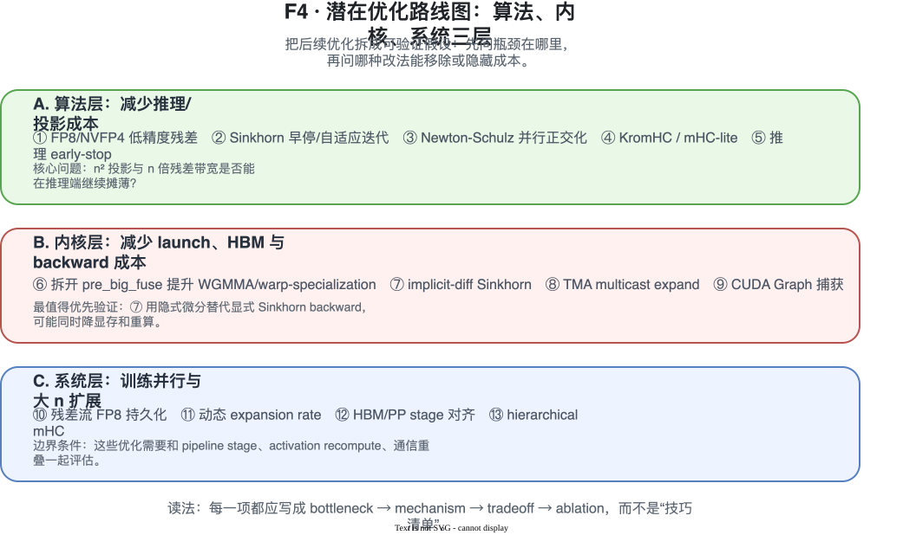
Source list. 这里保留论文、图源、官方实现和参考实现的入口，方便回溯本文每一处机制、公式和工程判断。